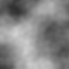
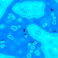
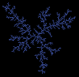

CD Track Listing Using freedb.org
CD Track Listing Using freedb.org
 Reading and Writing MP3 ID3v1 and ID3v2 Tags
Reading and Writing MP3 ID3v1 and ID3v2 Tags
 Transparent GDI Sprite Library
Transparent GDI Sprite Library

Algorithmic Images Index
Examples demonstrating the complex, dynamic and sometimes just curious graphic effects that can be achieved through the visualisation of mathematical algorithms.
|  | Perlin NoisePerlin Noise, named after its inventor Ken Perlin, is a widely used texturing primitive in two- and three- dimensional image creation. The Perlin Noise function generates a smoothly interpolated space of pseudo-random values which can be used as the basis for the procedural generation of realistic natural textures, such as marble, clouds, grass and many others. This article demonstrates the Perlin Noise function in VB. A future article will look at using the output to generate natural textures. Last Updated: 1 November 2003 |
|  | Totalistic Cellular AutomataContinuing this short series on the use of cellular automata for creation of algorithmic images, this sample demonstrates using the Totalistic form. A Totalistic cellular automata differs from other the other forms of the algorithm by summing the contribution from surrounding cells, and using modular arithmetic to provide the result. Last Updated: 23 October 2003 |
|  | Slow GrowThis sample models diffusion-limited aggregation and demonstrates that random behaviours can lead to rather less random-looking results with hardly any constraints on the random behaviour. Last Updated: 5 September 2003 |
Cellular Automata - Catalytic ReactionsThis sample shows demonstrates a cellular automata which was initially designed to mimic catalytic reactions and in particular the Belousov-Zhabotinsky or "Clock" reaction. It produces a great variety of continuously varying, wave-like patterns. Last Updated: 25 August 2003 | |
Cellular Automata - Crystal ModelA cellular automata are a class of mathematical systems which have been used widely in the investigation of complexity. An automaton is simple: an array of neighbouring cells each have a finite number of possible states. Each cell is then set to change its state when an imaginary clock ticks according to a set of rules which relate the new state to that of its neighbouring cells. Even with very simple rules, surprisingly complicated results bloom during their iteration. Last Updated: 23 August 2003 | |